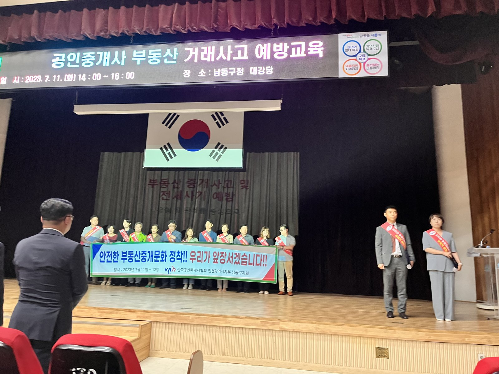

인천 공인중개사 연수교육 미수료자, 12월까지 6차례 추가 교육
안 받으면 과태료 20만~100만 원
AI경제저널=김갑봉 기자 | 2년마다 받는 연수교육을 아직 마치지 못한 인천 공인중개사에게 추가 기회가 열렸다. 인천시는 11~12월 연수교육 추가 과정을 6차례 연다고 5일 밝혔다. 기한 안에 받지 않으면 미이수 기간에 따라 과태료 20만~100만 원이 매겨진다.

온라인 6시간 듣고, 교육장 6시간 나와야
연수교육은 사무소를 연 개업공인중개사와 사무소에 고용된 소속공인중개사가 모두 받는 법정 교육이다. 공인중개사법 제34조 제4항은 실무교육을 받은 뒤 2년마다 시·도지사가 실시하는 연수교육을 받도록 정했다.
추가 과정은 두 단계다. 먼저 한국공인중개사협회 사이버교육원(karedu.or.kr)에서 온라인 교육 6시간을 듣는다. 그다음 한국공인중개사협회 인천광역시회 교육장에서 집합교육 6시간을 마치면 수료다. 집합교육 날짜와 세부 사항은 협회 인천광역시회가 안내한다.
교육은 부동산 중개 관련 법·제도 변경 사항, 중개업 경영 실무, 직업윤리, 전세사기 예방으로 짜였다. 시는 올해 5월부터 10월까지 군·구별로 연수교육을 차례로 열어 3900여 명이 수료했다고 밝혔다.
추가 연수교육이 중개사무소와 시민에게 말하는 것
첫째, 일터의 셈이다. 중개사무소를 꾸리는 개업공인중개사에게 집합교육 6시간은 영업 시간을 비우는 일이다. 그래도 미루면 과태료를 문다. 법이 정한 상한은 500만 원이다(공인중개사법 제51조 제2항 제5호의2). 실제 금액은 시행령 별표 2의 부과기준을 따른다(시행령 제38조).
둘째, 시민의 재산이다. 연수교육 과목에 전세사기 예방이 들어 있다. 개업공인중개사는 중개가 끝나기 전에 집의 상태와 권리관계를 확인해 성실·정확하게 설명해야 한다.
등기사항증명서 같은 근거자료도 보여 줘야 한다(같은 법 제25조 제1항). 이를 어기면 역시 500만 원 이하 과태료 대상이다. 연수교육은 이 설명 의무를 지는 중개사가 전세사기 수법과 바뀐 제도를 익히는 자리다.
셋째, 제도가 정한 선이다. 공인중개사법 시행령 제28조는 연수교육 시간을 12시간 이상 16시간 이하로 정했다. 이번 추가 과정은 온라인 6시간과 집합 6시간을 더해 그 하한인 12시간이다.
시행령은 시·도지사가 교육 대상자에게 2년이 되기 2개월 전까지 일시·장소·내용을 알리도록 했다. 시는 미수료자에게 문자로 따로 안내하겠다고 밝혔다.
넷째, 발표에 없는 숫자다. 이번 발표는 수료자 3900여 명만 밝혔다. 시가 4월 교육 계획을 알릴 때 밝힌 대상은 4600여 명이었다. 단순 차이는 700명 안팎이다(AI경제저널 계산). 추가 과정 6차례가 이 인원을 다 받을 수 있는지가 남은 물음이다.
문의는 협회 인천광역시회로
이원주 인천시 도시계획국장은 "연수교육은 전문성과 직업윤리 의식을 높이고 시민의 재산권을 보호하기 위한 중요한 과정"이라고 말했다. 교육 일정은 한국공인중개사협회 인천광역시회, 제도 문의는 인천시 토지정보과(032-440-4587)가 받는다.
참고문헌
- 인천광역시 토지정보과(2026). 인천시, 공인중개사 연수교육 추가 실시, 불이익 예방·전문성 강화(보도자료). 2026년 11월 5일. https://www.incheon.go.kr/IC010205/view?repSeq=DOM_0000000015899685
- 인천광역시 토지정보과(2026). 인천시, 2026년 공인중개사 연수교육 실시(보도자료). 2026년 4월 27일. https://www.incheon.go.kr/IC010205/view?repSeq=DOM_0000000014615062
- 「공인중개사법」(법률 제21409호, 2026. 8. 28. 시행) 제25조·제34조·제51조. 국가법령정보센터. https://www.law.go.kr/법령/공인중개사법
- 「공인중개사법 시행령」(대통령령 제36590호, 2026. 8. 28. 시행) 제28조·제38조. 국가법령정보센터. https://www.law.go.kr/법령/공인중개사법시행령
[사진 출처]
- [사진1] 인천광역시 보도자료 「인천시, 공인중개사 대상 부동산 거래사고 예방교육 실시」 사진, 공공누리 제1유형, 2023.7.26., https://www.incheon.go.kr/IC010205/view?repSeq=DOM_0000000008073835
관련기사
- [도시계획·부동산] 인천 아홉 구를 같은 16주로 다시 셌다, 세입자 부담은 영종·계양·연수가 컸다
- [주택공급 브리핑①] 수도권 착공 목표 26만8000호, 정부 전망도 최대 5만호 미달
- [도시계획·부동산] 인천 재개발 14곳 원문을 열었다, 9곳이 에너지 성능으로 용적률을 샀다
저작권자 © AI경제저널 무단전재 및 재배포, AI학습 및 활용 금지